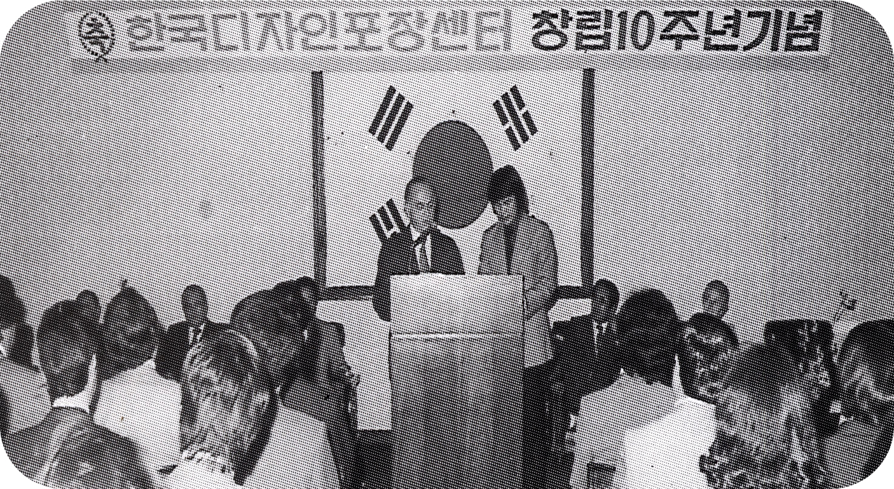
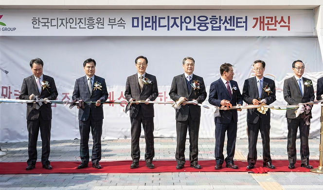
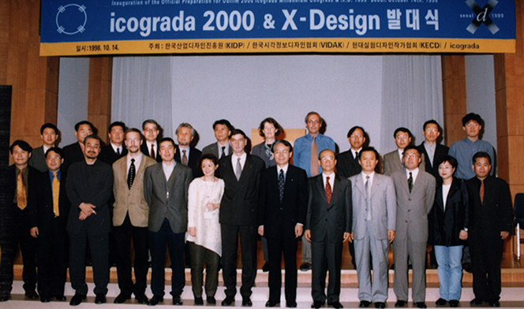
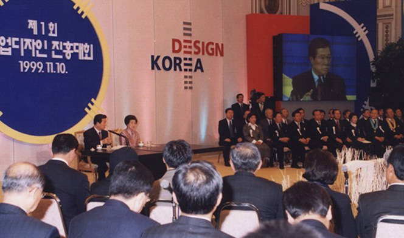
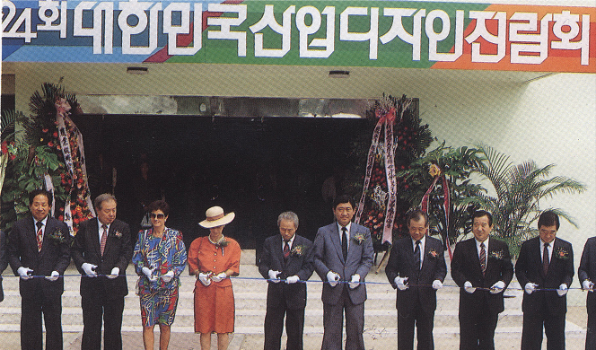
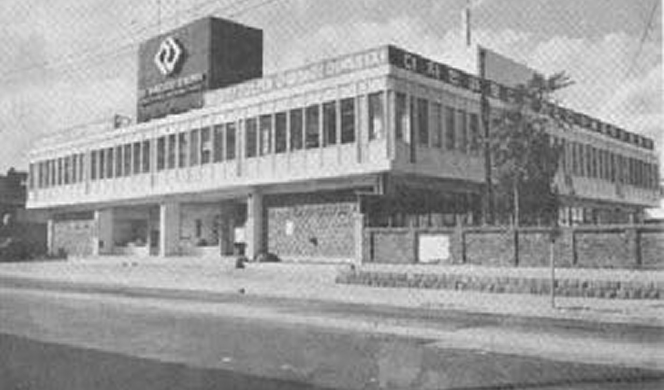

기관소개
기관소개
HOME > 기관소개 > 연혁
History연혁
1970년 한국디자인포장센터로 시작해 시대의 변화와 함께 호흡하며,
산업의 경쟁력을 다듬어 온 발자취를 소개합니다.

2010's~
- 2022 디자인주도 제조혁신센터(대구) 개소
- 2021 디자인주도 제조혁신센터(경남창원, 경기 시흥) 개소
- 2020 서비스경험디자인기사 국가기술자격시험 최초 시행
디자인진흥50년 기념, '디자인코리아' 출간
디자인코리아마당 유치 개관 - 2019 스타일테크 혁신성장공간(서울 강남) 개소
디자인 주도 제조혁신센터(서울 구로) 개소 - 2018 한-베 디자인센터 개소
- 2015 한국디자인진흥원 부속 미래융합디자인센터 개관식
- 2013 고객가치경영 선포
한국디자인진흥원 중국사무소(KIDP China) 오픈 - 2012 K-DESIGN 비전 선포식
제5차 산업디자인 진흥종합계획(2013~2017) - 2011 제9차 경제정책조정회의의 '디자인산업 육성 종합계획' 발표
- 2010 해외디자인 나눔사업 실시 (베트남,말레이시아)

▲ 2015 한국디자인진흥원 부속 미래융합디자인센터 개관식 이미지
2000's
- 2009 세계디자인 수도 서울 개막식
- 2008 제4차 산업디자인 진흥종합계획(2008~2012) 공고
- 2007 디자인나눔(사회공헌활동)시작
- 2005 디자인 권리 보호 디자인보호법 제정
- 2006 Design Korea 상하이 개최
- 2001 세계산업디자인총회(ICSID) 개최
코리아디자인센터 준공 (한국디자인진흥원 이전)
한국디자인진흥원으로 출범 (산업디자인진흥법 개정) - 2000 세계그래픽디자인대회(ICOGRADA) 개최

▲ 2000 세계그래픽디자인대회(ICOGRADA) 개최 이미지
1990's
- 1999 제1회 대한민국디자인진흥대회 개최
- 1997 산업디자인진흥법 개정
- 1996 국제산업디자인대학원(IDAS) 개원
- 1994 매년 5월 2일 산업디자인의 날 선포
- 1992 우수디자인(GD)상품 선정제
- 1991 한국산업디자인포장개발원 개칭
- 1987 제1회 한국우수포장대전 디자인 정보화 사업
- 1986 제21회 대한민국디자인전람회 개최
86 아시안게임 포스터
제2회 우수디자인상품선정제

▲ 1999 제1회 산업디자인 진흥대회 개최
1980's
- 1988 산업디자인 100호지 발간
- 1987 제1회 한국우수포장대전 디자인 정보화 사업
- 1986 제24회 대한민국디자인전람회 개최
- 1985 우수산업디자인(GD)상품 선정제 도입
- 1984 디자이너 등록제 시행
- 1982 디자인 전문인력 양성
- 1981 ICSID 81국제산업디자인대회
- 1980 정부 디자인 정책

▲ 1986 제24회 대한민국디자인전람회 개최 이미지
1970's
- 1979 국산 디자인 수출과 한국종합전시장 개관
- 1977 산업디자인포장진흥법 제정
- 1976 대한민국산업디자인전람회로 개칭
- 1975 개발도상국들을 위한 국제포장세미나 개최
- 1973 국제산업디자인협의회(ICSID) 정회원 가입
- 1972 우수포장 및 디자인 시제품전 개막식
- 1971 제6회 대한민국상공미술전람회
- 1970 한국디자인포장센터 설립

▲ 1970 한국디자인포장센터설립 이미지